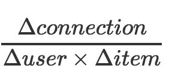

- 00 开篇词 用知识去对抗技术不平等.md.html
- 01 你真的需要个性化推荐系统吗_.md.html
- 02 个性化推荐系统有哪些绕不开的经典问题？.md.html
- 03 这些你必须应该具备的思维模式.md.html
- 04 画鬼容易画人难：用户画像的“能”和“不能”.md.html
- 05 从文本到用户画像有多远.md.html
- 06 超越标签的内容推荐系统.md.html
- 07 人以群分，你是什么人就看到什么世界.md.html
- 08 解密“看了又看”和“买了又买”.md.html
- 09 协同过滤中的相似度计算方法有哪些.md.html
- 10 那些在Netflix Prize中大放异彩的推荐算法.md.html
- 11 Facebook是怎么为十亿人互相推荐好友的.md.html
- 12 如果关注排序效果，那么这个模型可以帮到你.md.html
- 13 经典模型融合办法：线性模型和树模型的组合拳.md.html
- 14 一网打尽协同过滤、矩阵分解和线性模型.md.html
- 15 深度和宽度兼具的融合模型 Wide and Deep.md.html
- 16 简单却有效的Bandit算法.md.html
- 17 结合上下文信息的Bandit算法.md.html
- 18 如何将Bandit算法与协同过滤结合使用.md.html
- 19 深度学习在推荐系统中的应用有哪些_.md.html
- 20 用RNN构建个性化音乐播单.md.html
- 21 构建一个科学的排行榜体系.md.html
- 22 实用的加权采样算法.md.html
- 23 推荐候选池的去重策略.md.html
- 24 典型的信息流架构是什么样的.md.html
- 25 Netflix个性化推荐架构.md.html
- 26 总览推荐架构和搜索、广告的关系.md.html
- 27 巧妇难为无米之炊：数据采集关键要素.md.html
- 28 让你的推荐系统反应更快：实时推荐.md.html
- 29 让数据驱动落地，你需要一个实验平台.md.html
- 30 推荐系统服务化、存储选型及API设计.md.html
- 31 推荐系统的测试方法及常用指标介绍.md.html
- 32 道高一尺魔高一丈：推荐系统的攻防.md.html
- 33 和推荐系统有关的开源工具及框架介绍.md.html
- 34 推荐系统在互联网产品商业链条中的地位.md.html
- 35 说说信息流的前世今生.md.html
- 36 组建推荐团队及工程师的学习路径.md.html
- 加餐 推荐系统的参考阅读.md.html
- 结束语 遇“荐”之后，江湖再见.md.html
- 捐赠
01 你真的需要个性化推荐系统吗_
个性化推荐的历史和我们国家的改革开放历史差不多，已经有些年头了。它已经从一个非常小众的方向，演变成了今天互联网产品的常见“配件”。
再加上一些以“个性化”为品牌卖点的互联网产品的成功，也给相关从业者打了一剂“强心针”，并让更多人跃跃欲试，想给自己的产品加上个性化元素。
但是别急，在问“该怎么做”之前，先来回答一下“要不要做”，毕竟谁都不想去实现一个无脑PM拍脑袋给出的需求不是？我先帮你更加透彻地理解“推荐系统”这个概念，只有彻底理解了事物的本质，才能轻松做出“适不适合”的判断，毕竟知根知底再相爱更容易到白头。
什么是推荐系统？
到底什么是推荐系统？按照维基百科的定义：它是一种信息过滤系统，手段是预测用户（User）对物品（Item）的评分和偏好。这个定义不是很好理解，也不恰当。它用“怎么做”来定义了“是什么”，这相当于变相规定了推荐系统的实现路径。
让我们来换一个角度回答三个问题，从而重新定义什么是推荐系统：
- 它能做什么；
- 它需要什么；
- 它怎么做。
对于第一个问题“它能做什么”，我的回答是：推荐系统可以把那些最终会在用户（User）和物品（Item）之间产生的连接提前找出来。
这里简单说一下“连接”这个词，这个词含义非常广泛，凡是能够产生关系的都是连接，比如用户对物品做出了一个行为，或者用户的某些属性和物品的属性一样等等，有关系就是连接。
为什么这么说呢？这是基于这么一个事实：万事万物有相互连接的大趋势，比如人和人倾向于有更多社会连接，于是有了各种社交产品；比如人和商品有越来越多的消费连接，于是有了各种电商产品；人和资讯有越来越多的阅读连接，于是有了信息流产品。
这还只是纯数字世界，随着各种物理实体智能化趋势越来越明显，万物互联还会进一步强化。世界是一个数字化的大网，但里面只有两类节点：人和其他。
人是互联的终极意义，“其他”统称为物品，物品可能是人、资讯、消费品、服务等。推荐系统就是要在这张巨大的网中，不断去发现那些很可能会和人发生连接的另一类物品节点，让它们和用户真的建立连接。
提炼一下上述逻辑：
- 世界的发展趋势是万物倾向于建立越来越多的连接；
- 人是这一切趋势的意义所在，为人建立连接是要义；
- 根据已有的连接预测和人有关的连接，就是推荐系统。
为了更形象，我再举几个例子。
1 一个社交产品，比如脸书（Facebook），如果它的20亿活跃用户之间已经都有社交关系了，那么它的“感兴趣的人”这一推荐系统就该寿终正寝了。
从已经建立社交关系的用户身上去推测你还可能对哪些人感兴趣，本质上就是提前把那些可能的用户连接找出来，然后再按照用户分别呈现在每一个人面前。
2 一个信息流资讯阅读产品，比如今日头条，只有当用户不断点进源源不断的内容物品中，每一次点击，就是一个连接，每一次阅读也是一个连接，不同层次不同重要性的连接在推荐系统的帮助下不断建立，所主要依据的就是那些已经存在的连接，即：用户过去都点击阅读了哪些内容。
3 一个电商平台，用户刚买过什么，常买什么，你正在浏览什么，这些都是用户和物品之间已经存在的连接，用这些连接去预测还会买什么，还会看什么也是推荐系统。
按照上面的分析，我也同时回答了第二个问题“它需要什么”：推荐系统需要已经存在的连接，从已有的连接去预测未来的连接。
第三个问题：怎么做？
维基百科的定义提供了一个说法：预测用户评分和偏好。这是推荐系统背后相关算法和技术的两大分类，在后面的专栏内容中我会讲到；但比这个定义更抽象的实现方式分类是：机器推荐和人工推荐，也就是通常说的“个性化推荐”和“编辑推荐”。
两者之间还存在现在最常见的领域专家推荐，也就是网红推荐，如何为用户找到适合他的网红也属于推荐系统范畴，编辑推荐偏玄学了，我在这个专栏里不会重点讨论。
总结一下推荐系统就是：用已有的连接去预测未来用户和物品之间会出现的连接。
你需要推荐系统吗？
我已经根据“能做什么”“需要什么”“怎么做”三个方面，讨论了什么是推荐系统。那么只要前两个条件成熟，你就需要一个推荐系统，至于“怎么做”的问题则简单得多，否则的话就是暂时不需要。那么，如何判断条件是否成熟了呢？
我们可以考虑两点。
第一，看看产品的目的。如果一款产品的目的是建立越多连接越好，那么它最终需要一个推荐系统。有哪些产品的目的不是建立连接呢？一种典型的产品就是工具类，如果是单纯提高人类某些工作的效率而存在的产品，比如一个视频编辑器，则不需要。虽然如今很多产品都从工具切入最后做成社区了，至少在工具属性很强时不需要推荐系统。
第二，看看产品现有的连接。如果你的产品中物品很少，少到用人工就可以应付过来，那么用户产生的连接肯定不多，因为连接数量的瓶颈在于物品的数量，这时候不适合搭建推荐系统。
或者用户和物品数量在某些手段下也变得很多，但是用户和物品之间的连接很少，表现就是用户的留存回访很低，这时候也不是很需要一个推荐系统。
你应该是想办法找到用户流失的原因，直到他们能贡献第一批连接才行。当然，用户很少时，人工完全可以应付一对一服务时，也是不需要推荐系统的。
关于第二点，“长尾理论”可以帮助我们理解，如何把用户和物品各种可能的连接汇总，包括用户属性、物品属性等，应该要有长尾效应才可能让推荐系统发挥效果。
这里我介绍一个简单指标，用于判断是不是需要推荐系统：

分子是增加的连接数，分母是增加的活跃用户数和增加的有效物品数。
这个简单的指标我解释一下：
如果增加的连接数主要靠增加的活跃用户数和增加的物品数贡献，则该值会较小，不适合加入推荐系统；- 如果增加的连接数和新增活跃用户和物品关系不大，那说明连接数已经有自发生长的趋势了，适合加入推荐系统加速这一过程。
不过，具体并没有判断标准，因产品而异。
总结
到底要不要上推荐系统，如果仅仅从战术上来看，是一个关乎投入产出比的问题，搭建一个推荐系统的前期投入不小，你需要：组建团队、购置计算资源、积累数据、花费时间优化。
这些成本在早期不必须或者不成熟的情形下投入，显然投入产出比不是很优；但如果是战略问题，那就不在本文的讨论范围内了，至于哪些算是战略问题，我列举几个例子：
- 产品要有这个属性，方便产品融资；
- 团队要有相关人才，因为不好招聘，先提前屯着；
- 要培养这样的思维，从而形成数据导向的产品文化。
类似等等，都不属于战术问题，具体问题具体分析。
现在我们来回顾一下，今天我先从三个角度定义了什么是推荐系统，然后从定性和定量两个角度分析了到底是否需要给自己的产品加上推荐系统。
那么，你可以试着从这两个角度分析一下，你自己的产品是不是需要推荐系统呢？欢迎留言，我们一起讨论。

© 2019 - 2023 Liangliang Lee. Powered by gin and hexo-theme-book.